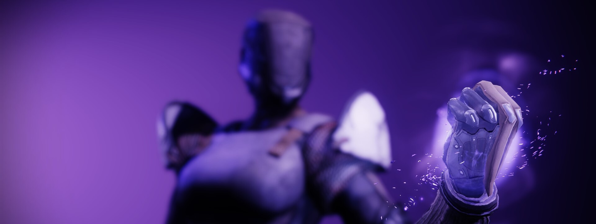
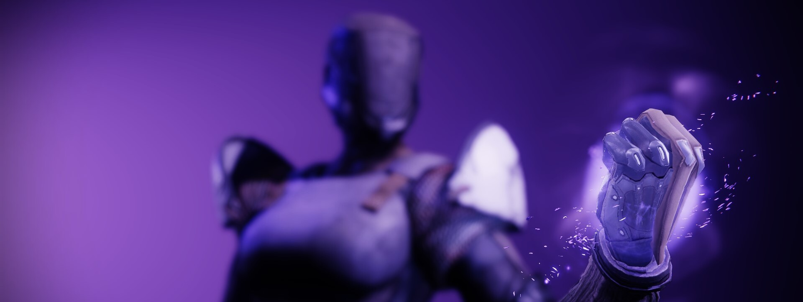

Le Titan
Les Titans représentent la force brute chez les Gardiens, et leurs compétences sont les plus spectaculaires. Offensivement, ils disposent d'une grande sélection de pouvoirs à impact direct qui créent des trouées parmi les cibles ennemies. Ils peuvent également ériger des barrières pour se protéger ainsi que leur escouade. Les Titans disposent d'une poussée qui leur permet de glisser en hauteur, comme les Arcanistes, mais les Titans sont plus orientés sur la vitesse que la durée de vol plané.
« Je suis le mur contre lequel les Ténèbres se brisent... Je suis le mur contre lequel les Ténèbres se brisent... Je suis le mur contre lequel les Ténèbres se brisent... »
Je répète ces mots au milieu des décombres. Les amas ardents, la terre meurtrie, les guerriers et leur butin. La victoire est à nous. C'est à ce moment-là que tout devrait rentrer dans l'ordre. Mais je ne ressens que le vide.
Personne ne considère les Titans comme des méditants mais, d'après moi, il n'y a pas meilleure provocation que le désenchantement qui suit la bataille. Je suis entièrement accaparé par le combat. Et quand il se termine, l'espace s'effondre autour de moi. Avant, je vivais dans cet état-là, dans l'agonie. Je ressentais une envie irrésistible d'échapper à cette sensation, alors je trouvais une raison de provoquer quelque chose, peu importe quoi, pour le simple plaisir de voir les étincelles voler. À présent, je médite.
Avec le temps, j'ai appris à imposer la même angoisse à mes ennemis. Quand vous n'y êtes pas préparé, le poids de votre propre insignifiance à l'aune de l'immensité du cosmos peut être... débilitante.
Je dois encore affronter le silence après la gloire. Mais c'est dans ces moments de silence que je ressens le plus profondément la nature de l'Abysse. Je crois que j'ai commencé à les attendre avec impatience.
Les Capacités
Bouclier de sentinelle
Utilisez la garde avec Bouclier de Sentinelle pour créer un mur défensif. Les alliés qui tirent à travers le mur augmentent les dégâts d'armes, et les alliés qui utilisent la garde augmentent la durée du bouclier.
Rempart d'aurore
Créez un dôme indestructible qui vous protège, ainsi que vos alliés. Passer à travers le Rempart d'aurore vous confère à vous, ainsi qu'à vos alliés, une augmentation temporaire de vos dégâts des armes.
- Grenades